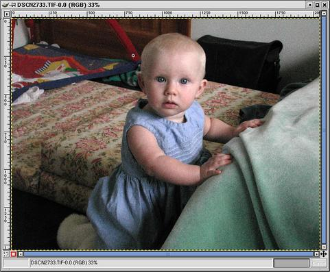
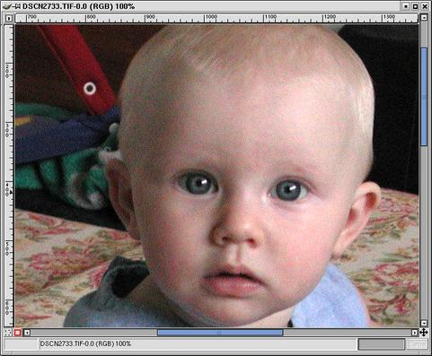
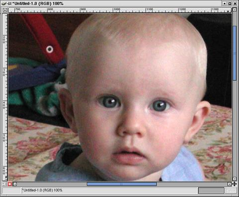
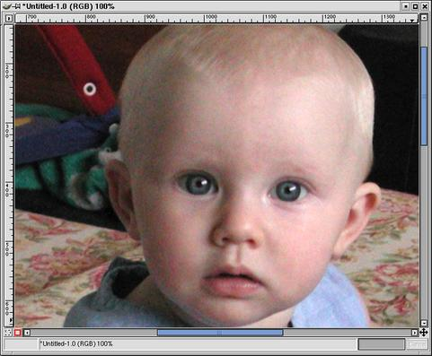
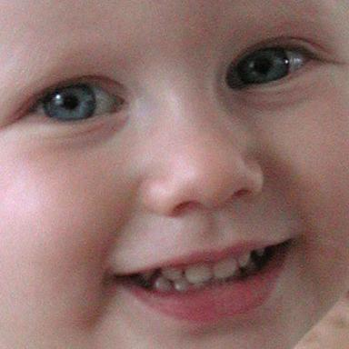

Text and images Copyright (C) 2002 Eric R. Jeschke and may not be used without permission of the author.


Images captured by a CCD or CMOS imaging chip will often have some noise present. This noise typically can be seen as RGB "flecks",
especially noticable in the in the shadow areas of an image. The red and blue channels are especially susceptible.
Higher ISO settings and higher ambient temperatures increase the likelihood of acquiring this noise along with your image.
If you find it necessary to shoot with a higher ISO and you find that you have an unpleasant amount of noise in your image, this tutorial will help you improve the image.
One procedure that works reasonably well is to apply the Despeckle filter. Unfortunately, this filter will soften the image. Fortunately, you can get sharpen the image to partially offset this.
 
Here is the original image. Notice how bad the noise is, especially in the shadows of the face and in the white wall (back right).
 

Right-click in the image and select <Image>Filters->Enhance->Despeckle.
You can play around with the settings, but you'll likely want to keep the radius pretty small. If you raise it too high you'll destroy details like the catchlights in the eye.
The "Recursive" option seems to cause a more aggressive filter effect. Try it if you have an especially noisy image.
Examine the resulting image, zooming in to examine shadow areas. You'll notice that the noise is appreciably less objectionable.
You cannot really eliminate it, but it is "smoothed out".
Unfortunately, you may also notice that the image is softer; the despeckle filter actually blurs the image.
Fortunately we can offset this to some degree by sharpening.

For best results, especially with a noisy image, you'll want to use smart sharpening, explained elsewhere on this site.
This particular image was edge sharpened on all RGB channels. If you find edge ("smart") sharpening too difficult,
just apply a little global sharpening to offset the softening.

Zoomed out (upper left). Compare to the original (upper right) Look at the arm and the white wall in back right. Much better.
- It may not be necessary to apply the despeckle filter across all RGB channels; as I mentioned earlier, CCD noise tends to show up predominantly in the blue or red channels.
You can open the Layers dialog (Ctrl+L), click on the Channels tab and just select the channel(s) that you want to apply the filter to.
To examine the individual channels for noise, right click in the image and select <Image>Image->Mode->Decompose;
choose RGB for the decomposition.
Similarly, you can try decomposing to HSV or LAB, running the despeckle filter on one or more parts (e.g. value channel from HSV) and recomposing.
Note: along these lines I have seen it suggested from several sources that decomposing to LAB, applying a slight gaussian blur to the A+B channels and then sharpening the L channel is a good approach to reducing CCD artifacts. I have to say that so far in my experiments this approach has not worked for me; I find the despeckle method far superior.


The original tutorial (possibly with updated information) may be found here.